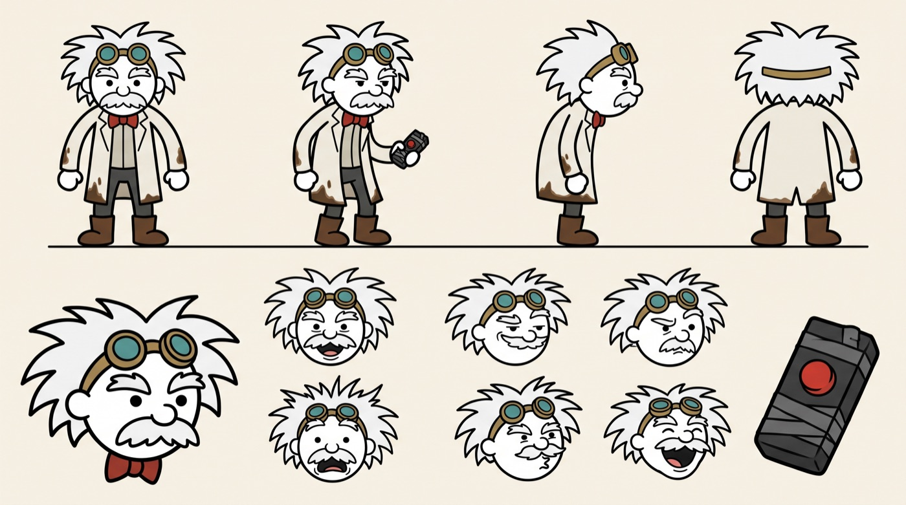
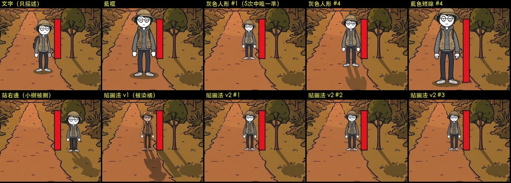

結果
新鏡頭用語測試結果五組單獨測、我的 v1 和 Codex 改寫版各 4 張的圖、目測判定，和還沒測的清單。
測試
新鏡頭用語測試規劃五組（拍多大、相機高低、左右方向、從哪一邊拍、用誰的眼睛看）的細項、定義、prompt 和參考圖。
用語
鏡頭用語統一版景別 8 級、方位、高度、角度、構圖等必填 8 欄和選填欄位，跟舊十級景別的對照。
Codex
EP1 冷開場：Codex 怎麼拍 vs 我們用標準 prompt 問 Codex 段落 0 要分幾個鏡頭、怎麼拍，跟我們的 4 格對照。
分鏡
恐龍年代兩集：分鏡清單＋旁白第 7 步：EP1 v8（標出跟定稿 v6 不同的格）＋ EP2 v1 新切的分鏡和道具時間線。

人物與場景設定HERO、博士、石頭和恐龍的設定圖，博士小屋和校務大樓的原型照片（柏克萊）。
EP1＋EP2
恐龍年代兩集：審故事EP1 完整故事（標出改動）＋ EP2 故事 v1 ↔ v2 對照，第 6 步審故事用。
26 步
製作步驟總表從書的一章到上架：每步有沒有討論過、誰決定、用什麼工具、怎麼做。

HERO 放進畫面的實驗白地、小樹、紅柱、加 TEEN、森林貼圖法、十字路口橫移，每次的圖和 prompt。

背景實驗紀錄黃昏森林背景的五種效果，每個試過的做法和結果。

第一幕追逐：十一種表現法S00-1 → S00-3 暴龍從遠處追到鏡頭前，十一種畫法對照。

S00-3 景別 × 相機角度10 級景別 × 4 種角度共 160 張，加上對照官方定義的評估。